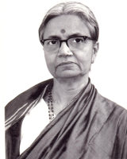

Welcome to Devagitam
Welcome to the world of chaste Karnatak music of the modern composer Sri H. Yoganarasimham!
Yoganarasimham (1897-1971) is a composer of rare merit in whom musical excellence and lyrical beauty find a happy union, as do classicism and modernity.
